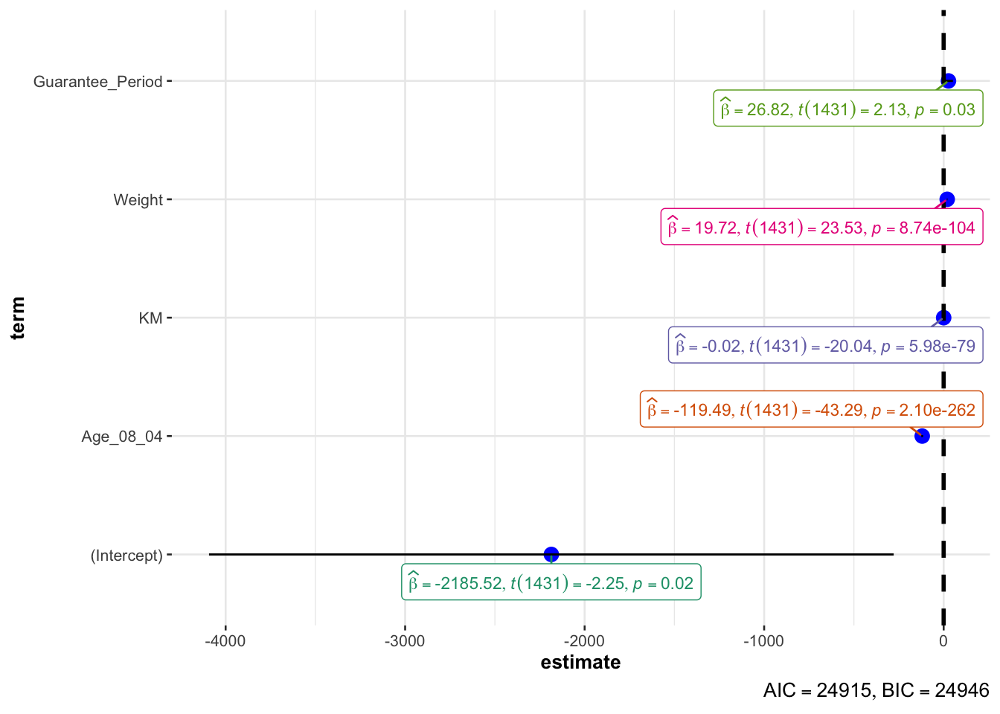

pacman::p_load(ggstatsplot, tidyverse)Hands-on Ex04-2
Visual Statistical Analysis
1 Learning Outcome
In this hands-on exercise, we will gain hands-on experience on using:
- ggstatsplot package to create visual graphics with rich statistical information.
- performance package to visualise model diagnostics.
- parameters package to visualise model parameters.
2 Visual Statistical Analysis with ggstatsplot
ggstatsplot  is an extension of ggplot2 package for creating graphics with details from statistical tests included in the information-rich plots themselves.
is an extension of ggplot2 package for creating graphics with details from statistical tests included in the information-rich plots themselves.
- to provide alternative statistical inference methods by default.
- to follow best practices for statistical reporting. For all statistical tests reported in the plots, the default template abides by the [APA](https://my.ilstu.edu/~jhkahn/apastats.html) gold standard for statistical reporting.
For example, here are results from a robust t-test:
3 Getting started
3.1 Installing and launching R packages
In this exercise, ggstatsplot and tidyverse will be used.
3.2 Importing data
DIY
Import Exam-csv data by using appropriate tidyverse package.
exam <- read_csv("data/Exam_data.csv")3.3 One-sample test: gghistostats() method
In the code chunk below, gghistostats() is used to build an visual of one-sample test on English scores.
Show the code
set.seed(1234)
gghistostats(
data = exam,
x = ENGLISH,
type = "bayes",
test.value = 60,
xlab = "English scores"
)
Default information:
statistical details / Bayes Factor / sample sizes / distribution summary
3.4 Unpacking the Bayes Factor
A Bayes factor is the ratio of the likelihood of one particular hypothesis to the likelihood of another. It can be interpreted as a measure of the strength of evidence in favour of one theory among two competing theories.
That’s because the Bayes factor gives us a way to evaluate the data in favour of a null hypothesis, and to use external information to do so. It tells us what the weight of the evidence is in favour of a given hypothesis.
When we are comparing two hypotheses, H1 (the alternate hypothesis) and H0 (the null hypothesis), the Bayes factor is often written as B10. It can be defined mathematically as:
\[ \frac{likelihood-of-data-given-H_1}{likelihood-of-data-given-H_0} = \frac{P(D|H_1)}{P(D/H_0)} \]
The Schwarz criterion is one of the easiest ways to calculate rough estimation of the Bayes factor.
3.5 How to interpret Bayes Factor
A Bayes Factor can be any positive number.
One of the most common interpretation is this one - first proposed by Harold Jeffereys (1961) and slightly modified by Lee and Wagemakers in 2013.
| IF B10 IS… | THEN YOU HAVE |
|---|---|
| >100 | Extreme evidence for H1 |
| 30 - 100 | Very strong evidence for H1 |
| 10 - 30 | Strong evidence for H1 |
| 3 - 10 | Moderate evidence for H1 |
| 1 - 3 | Anecdotal evidence for H1 |
| 1 | No evidence |
| 1/3 - 1 | Anecdotal evidence for H1 |
| 1/3 - 1/10 | Moderate evidence for H1 |
| 1/10 - 1/30 | Strong evidence for H1 |
| 1/30 - 1/100 | Very Strong evidence for H1 |
| <1/100 | Extreme evidence for H1 |
3.6 Two-sample mean test: ggbetweenstats()
In the code chunk below, ggbetweenstats() is used to build a visual for two-sample mean test of Maths scores by gender.
Show the code
ggbetweenstats(
data = exam,
x = GENDER,
y = MATHS,
type = "np",
message = FALSE
)
Default information: statistical details / Bayes factor / samples sizes / distribution summary
3.7 Oneway ANOVA Test: ggbetweentats() method
In the code chunk below, ggbetweenstats() is used to build a visual for One-way ANOVA test on English scores by race.
Show the code
ggbetweenstats(
data = exam,
x = RACE,
y = ENGLISH,
type = "p",
mean.ci = TRUE,
pariwise.comparisons = TRUE,
pairwise.display = "s",
p.adjust.methods = "fdr",
message = FALSE
)
- “na” -> only non-significant
- “s” -> only significant
- “all” -> everything
3.7.1 ggbetweentats() - Summary of tests
Following (between-subjects) tests are carried out for each type of analyses.
| TYPE | NO. OF GROUPS | TEST |
|---|---|---|
| Parametric | >2 | Fisher’s or Welch’s one-way ANOVA |
| Non-Parametric | >2 | Kruskal-Wallis one-way ANOVA |
| Robust | >2 | Heteroscedastic one-way ANOVA for trimmed means |
| Bayes Factor | >2 | Fisher’s ANOVA |
| Parametric | 2 | Student’s or Welch’s t-test |
| Non-Parametric | 2 | Mann-Whitney U test |
| Robust | 2 | Yuen’s test for trimmed means |
| Bayes Factor | 2 | Student’s t-test |
The following effect sizes (and confidence intervals) are available for each type of test

Summary of multiple pairwise comparison tests supported in ggbetweenstats()

3.8 Significant test of correlation: ggscatterstats()
In the code chunk below, ggscatterstats() is used to build a visual for Significant Test of Correlation between Maths scores and English scores. Practice using various subjects from the data and labeling functions.
Maths x Science; use labels to indicate races scoring 90 for both subjects.
Show the code
ggscatterstats(
data = exam,
x = MATHS,
y = SCIENCE,
label.var = RACE,
label.expression = MATHS >= 90 & SCIENCE >= 90,
marginal = FALSE
)
English x Science; use labels to indicate genders scoring 90 for both subjects.
Show the code
ggscatterstats(
data = exam,
x = ENGLISH,
y = SCIENCE,
label.var = GENDER,
label.expression = ENGLISH >= 90 & SCIENCE >= 90,
marginal = FALSE
)
Show the code
ggscatterstats(
data = exam,
x = MATHS,
y = ENGLISH,
marginal = FALSE
)
3.9 Significant test of association (dependence): ggbarstats()
Code chunk below, the Maths scores are binned into a 4-class variable with cut()
#load library
library(dplyr)
exam1 <- exam |>
mutate(MATHS_bins =
cut(MATHS,
breaks = c(0,60,75,85,100)))ggbarstats() is used to build a visual for Significant Test of Association in the code below.
Usage
ggbarstats(
data,
x,
y,
counts = NULL,
type = "parametric",
paired = FALSE,
results.subtitle = TRUE,
label = "percentage",
label.args = list(alpha = 1, fill = "white"),
sample.size.label.args = list(size = 4),
digits = 2L,
proportion.test = results.subtitle,
digits.perc = 0L,
bf.message = TRUE,
ratio = NULL,
conf.level = 0.95,
sampling.plan = "indepMulti",
fixed.margin = "rows",
prior.concentration = 1,
title = NULL,
subtitle = NULL,
caption = NULL,
legend.title = NULL,
xlab = NULL,
ylab = NULL,
ggtheme = ggstatsplot::theme_ggstatsplot(),
package = "RColorBrewer",
palette = "Dark2",
ggplot.component = NULL,
...
)To see English scores by genders.
Show the code
exam_E <- exam |>
mutate(ENGLISH_bins =
cut(ENGLISH,
breaks = c(0,60,75,85,100)))
ggbarstats(exam_E,
x = ENGLISH_bins,
y = GENDER)
To see Science scores by races.
Show the code
exam_S <- exam |>
mutate(SCIENCE_bins =
cut(SCIENCE,
breaks = c(0,60,75,85,100)))
ggbarstats(exam_S,
x = SCIENCE_bins,
y = RACE)
ggbarstats(exam1,
x = MATHS_bins,
y = GENDER)
4 Visualsing Models
Learn how to visualise model diagnostic and model parameters by using parameters package.
🚙 🚙 🚙 🚙 🚙 Toyota Corolla case study will be used to build a model to discover factor affecting practices of used-cars by taking into consideration of a set of explanatory variables.
5 Getting started
6 Installing and loading the required libraries
pacman::p_load(readxl, performance, parameters, see)6.1 Importing Excel file: readxl methods
read_xls() of readxl package is used to import the data worksheet of ToyotaCorolla.xls worksbook into R.
read_xls() Usage
read_excel(
path,
sheet = NULL,
range = NULL,
col_names = TRUE,
col_types = NULL,
na = "",
trim_ws = TRUE,
skip = 0,
n_max = Inf,
guess_max = min(1000, n_max),
progress = readxl_progress(),
.name_repair = "unique"
)
read_xls(
path,
sheet = NULL,
range = NULL,
col_names = TRUE,
col_types = NULL,
na = "",
trim_ws = TRUE,
skip = 0,
n_max = Inf,
guess_max = min(1000, n_max),
progress = readxl_progress(),
.name_repair = "unique"
)
read_xlsx(
path,
sheet = NULL,
range = NULL,
col_names = TRUE,
col_types = NULL,
na = "",
trim_ws = TRUE,
skip = 0,
n_max = Inf,
guess_max = min(1000, n_max),
progress = readxl_progress(),
.name_repair = "unique"
)car_resale <- read_xls("data/ToyotaCorolla.xls",
"data")
car_resale# A tibble: 1,436 × 38
Id Model Price Age_08_04 Mfg_Month Mfg_Year KM Quarterly_Tax Weight
<dbl> <chr> <dbl> <dbl> <dbl> <dbl> <dbl> <dbl> <dbl>
1 81 TOYOTA … 18950 25 8 2002 20019 100 1180
2 1 TOYOTA … 13500 23 10 2002 46986 210 1165
3 2 TOYOTA … 13750 23 10 2002 72937 210 1165
4 3 TOYOTA… 13950 24 9 2002 41711 210 1165
5 4 TOYOTA … 14950 26 7 2002 48000 210 1165
6 5 TOYOTA … 13750 30 3 2002 38500 210 1170
7 6 TOYOTA … 12950 32 1 2002 61000 210 1170
8 7 TOYOTA… 16900 27 6 2002 94612 210 1245
9 8 TOYOTA … 18600 30 3 2002 75889 210 1245
10 44 TOYOTA … 16950 27 6 2002 110404 234 1255
# ℹ 1,426 more rows
# ℹ 29 more variables: Guarantee_Period <dbl>, HP_Bin <chr>, CC_bin <chr>,
# Doors <dbl>, Gears <dbl>, Cylinders <dbl>, Fuel_Type <chr>, Color <chr>,
# Met_Color <dbl>, Automatic <dbl>, Mfr_Guarantee <dbl>,
# BOVAG_Guarantee <dbl>, ABS <dbl>, Airbag_1 <dbl>, Airbag_2 <dbl>,
# Airco <dbl>, Automatic_airco <dbl>, Boardcomputer <dbl>, CD_Player <dbl>,
# Central_Lock <dbl>, Powered_Windows <dbl>, Power_Steering <dbl>, …
Warning
The output object car_resale is a tibble data frame.
Tibble is a modern data frame that is similar to data frames in R Programming Language but with some enhancements to make them easier to use and more consistent. Tibble is a part of the tidyverse package in R. Using tibbles we can view and understand the data very easily especially when working with large datasets
6.2 Multiple regression model using lm()
Code chunk below is used to calibrate a multiple linear regression model by using lm() of Base Stats of R.
model <- lm(Price~Age_08_04 + Mfg_Year + KM +
Weight + Guarantee_Period, data = car_resale)
model
Call:
lm(formula = Price ~ Age_08_04 + Mfg_Year + KM + Weight + Guarantee_Period,
data = car_resale)
Coefficients:
(Intercept) Age_08_04 Mfg_Year KM
-2.637e+06 -1.409e+01 1.315e+03 -2.323e-02
Weight Guarantee_Period
1.903e+01 2.770e+01 🦄 Can see how the variables affecting price positively or negatively.
6.3 Model diagnostic: checking for multicolinearity
Code below checks for Multicollinearity using check_collinearity() of performance package.
check_collinearity() Usage
check_collinearity(x, ...)
multicollinearity(x, ...)
# Default S3 method
check_collinearity(x, ci = 0.95, verbose = TRUE, ...)
# S3 method for class 'glmmTMB'
check_collinearity(
x,
component = c("all", "conditional", "count", "zi", "zero_inflated"),
ci = 0.95,
verbose = TRUE,
...
)
check_concurvity(x, ...)check_collinearity(model)# Check for Multicollinearity
Low Correlation
Term VIF VIF 95% CI Increased SE Tolerance Tolerance 95% CI
KM 1.46 [ 1.37, 1.57] 1.21 0.68 [0.64, 0.73]
Weight 1.41 [ 1.32, 1.51] 1.19 0.71 [0.66, 0.76]
Guarantee_Period 1.04 [ 1.01, 1.17] 1.02 0.97 [0.86, 0.99]
High Correlation
Term VIF VIF 95% CI Increased SE Tolerance Tolerance 95% CI
Age_08_04 31.07 [28.08, 34.38] 5.57 0.03 [0.03, 0.04]
Mfg_Year 31.16 [28.16, 34.48] 5.58 0.03 [0.03, 0.04]Next to plot the result:
#install.packages("bayestestR", repos = "https://easystats.r-universe.dev")
#remotes::install_github("easystats/see")
#install.packages("performance")
library(performance)
library("bayestestR")
library("see")
check_c <- check_collinearity(model)
plot(check_c)
6.4 Model diagnostic: checking normality assumption
Checking normality using check_normality() from the performance package.
check_normality()usage
check_normality(x, ...)
# S3 method for class 'merMod'
check_normality(x, effects =
c("fixed", "random"), ...)Show the code
model1 <- lm(Price ~ Age_08_04 + KM +
Weight + Guarantee_Period,
data = car_resale)
#check normality
check_n <- check_normality(model1)
plot(check_n)
🐠 The Performance workflow

6.5] Model diagnostic: check model for homogeneity of variances
Check model for constant error variance using check_heteroscedasticity() from the performance package.
check_heteroscedasticity() usage
check_heteroscedasticity(x, ...)
check_heteroskedasticity(x, ...)check_h <- check_heteroscedasticity(model1)
plot(check_h)
6.6 Model diagnostic: complete check
Use check_model() to perform a complete model check.
Visual check of various model assumptions (normality of residuals, normality of random effects, linear relationship, homogeneity of variance, multicollinearity).
If check_model() doesn’t work as expected, try setting verbose = TRUE to get hints about possible problems.
check_model(x, ...)
# Default S3 method
check_model(
x,
panel = TRUE,
check = "all",
detrend = TRUE,
bandwidth = "nrd",
type = "density",
residual_type = NULL,
show_dots = NULL,
size_dot = 2,
size_line = 0.8,
size_title = 12,
size_axis_title = base_size,
base_size = 10,
alpha = 0.2,
alpha_dot = 0.8,
colors = c("#3aaf85", "#1b6ca8", "#cd201f"),
theme = "see::theme_lucid",
verbose = FALSE,
...
)Show the code
check_model(model1)
6.7 Visualising regression parameters: see methods
Use plot() from the see package and parameters() from the parameters package to visualise the parameters of a regression model.
plot(parameters(model1))
6.8 Visualising regression parameters: ggcoefstats() methods
Use ggcoefstats() from ggstatsplot package to visualise the parameters of a regression model.
Show the code
ggcoefstats(model1,
output = "plot")